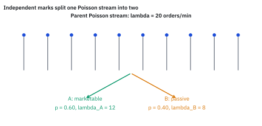
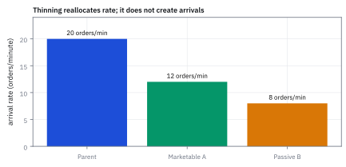
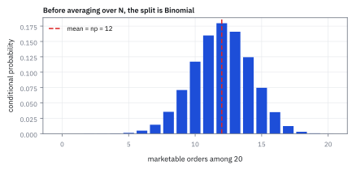
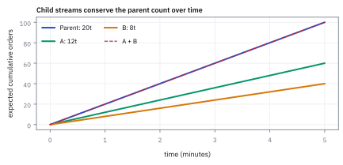

2.4 Poisson Thinning (Splitting)
สุ่มติดป้ายให้เหตุการณ์ แล้วแยกเป็นสองกลุ่มที่ยังนับโอกาสได้ง่าย
หยดน้ำเข้าท่อเฉลี่ย 20 หยดต่อนาที แล้วเครื่องติดสติกเกอร์แดงให้ 60% และน้ำเงินให้ 40% คุณเดาจำนวนเฉลี่ยของแต่ละสีได้ไหม?
เฉลย: แดงเฉลี่ย 12 และน้ำเงินเฉลี่ย 8 หยดต่อนาที ส่วนที่น่าแปลกคือ นาทีที่แดงมา 16 หยด ไม่ได้ทำให้น้ำเงินในนาทีนั้นน้อยลง จำนวนน้ำเงินยังเฉลี่ย 8 เหมือนเดิม สองสีเป็นอิสระต่อกัน ทั้งที่มาจากท่อเดียวกัน ขั้นที่ 5 จะพิสูจน์ด้วยการนับ
Poisson thinning หรือ splitting คือการสุ่มแบ่งเหตุการณ์ของ Poisson process เป็นสายย่อยอิสระ โดยอัตราแต่ละสายเท่ากับอัตราเดิมคูณโอกาสป้าย ใช้แยกเหตุการณ์ตามประเภทโดยคงแบบจำลองนับครั้งไว้
ศัพท์ที่ใช้ในหัวข้อนี้
- Poisson process
- Poisson process คือ process สำหรับนับเหตุการณ์ตามเวลาที่มีอัตราคงที่และช่วงไม่ทับกันมี independence ใช้ model จำนวน arrivals ในแต่ละช่วง
- stochastic process
- ชุด random variables ที่เรียงตามเวลา ใช้บอกว่าปริมาณสุ่มเปลี่ยนอย่างไรจากช่วงหนึ่งไปอีกช่วง
- Poisson thinning (splitting)
- วิธีสุ่มแยกเหตุการณ์ Poisson เป็นสายย่อยด้วย probability ที่กำหนด โดยแต่ละสายยังเป็น Poisson process ใช้คำนวณ arrival rate แยกตามประเภท
- Poisson distribution
- Poisson distribution บอกโอกาสของจำนวนครั้งที่เหตุการณ์สุ่มจะเกิดในช่วงเวลาหนึ่ง
- Binomial distribution
- Binomial distribution บอก probability ของจำนวนครั้งที่สำเร็จจากการทดลองซ้ำแบบ independent ใช้เมื่อจำนวนเหตุการณ์รวมถูกล็อกไว้แล้ว
- independence
- independence หมายถึงเหตุการณ์ในสายหนึ่งไม่ให้ข้อมูลและไม่เปลี่ยน probability ของอีกสาย ใช้ตรวจว่าสอง count แยกวิเคราะห์ได้หรือไม่
- SPY
-
คืออะไร: ชื่อย่อของกองทุนที่ซื้อขายในตลาดหลักทรัพย์ ซึ่งเคลื่อนไหวตามดัชนี S&P 500
ใช้ทำอะไร: เป็นตัวอย่างในหัวข้อนี้ เพราะมีรายการซื้อขายมากพอจะแยกเป็นสายย่อยได้จริง
ทำไมถึงเลือกตัวนี้: เพราะมีคำสั่งเข้ามาหลายแสนรายการต่อวัน การแบ่งกระแสนั้นออกเป็นสองสายจึงยังเหลือข้อมูลพอในแต่ละสาย
- exchange-traded fund (ETF)
-
คืออะไร: กองทุนที่ซื้อขายในตลาดได้เหมือนหุ้นตัวหนึ่ง
ใช้ทำอะไร: ใช้ลงทุนในตะกร้าหุ้นทั้งตะกร้าด้วยคำสั่งเดียว
ทำไมถึงเกี่ยวกับหัวข้อนี้: เพราะการที่มันซื้อขายได้ตลอดวัน ทำให้เกิดกระแสคำสั่งต่อเนื่องที่นับได้ ซึ่งเป็นข้อมูลที่วิธีในหัวข้อนี้ต้องใช้
- marketable order
- คำสั่งซื้อขายที่ต้องการจับคู่ทันทีกับราคาที่มีอยู่ในตลาด (เช่น market order) เปรียบเสมือนจุดกลุ่ม A ที่ต้องการความเร็ว
- passive order
- คำสั่งซื้อขายที่ตั้งรอราคาไว้ในสมุดคำสั่ง (limit order) เปรียบเสมือนจุดกลุ่ม B ที่เน้นรอราคาที่ต้องการ
- order book
- รายการเสนอซื้อและเสนอขายที่ตั้งรอจับคู่ตามแต่ละระดับราคา ใช้ดูว่ามีคำสั่งรออยู่เท่าไรและตรงราคาใด
- liquidity
- สภาพคล่อง หรือความง่ายและความเร็วในการซื้อขายสินทรัพย์โดยไม่ทำให้ราคาตลาดเปลี่ยนแปลงรุนแรง
- fill rate
- สัดส่วนของคำสั่งที่ส่งไปแล้วได้จับคู่จริง ใช้เป็นโอกาสของเหรียญที่แยกคำสั่งออกเป็นได้จับคู่กับไม่ได้
- coefficient of variation (CV)
- standard deviation หารค่าเฉลี่ย ใช้เทียบความเหวี่ยงเป็นสัดส่วนของขนาด
- adverse selection
- การที่คำสั่งได้จับคู่บ่อยที่สุดในจังหวะที่แย่ที่สุด เช่นตอนราคาวิ่งสวนทาง ใช้เตือนว่ากำไรต่อการจับคู่ไม่คงที่
- Probability Generating Function (PGF)
- function ทางคณิตศาสตร์ที่เก็บข้อมูล probability ของ random variable จำนวนนับไว้ในรูปเลขชี้กำลัง ใช้พิสูจน์ distribution และ independence ของผลรวมสุ่ม
- indicator random variable
- random variable ที่มีค่าได้เพียง 1 หรือ 0 เพื่อระบุว่าเหตุการณ์ที่สนใจเกิดขึ้นหรือไม่ ใช้แปลงการนับจำนวนครั้งให้อยู่ในรูปผลรวมทางคณิตศาสตร์
สัญลักษณ์ที่ใช้ในหัวข้อนี้
| สัญลักษณ์ | ความหมาย | หน่วย |
|---|---|---|
| $N(t)$ | จำนวนคำสั่งรวมที่เข้ามาใน $t$ นาที | คำสั่ง |
| $\lambda$ | อัตราเฉลี่ยของคำสั่งรวม | คำสั่งต่อนาที |
| $t$ | ระยะเวลาที่นับ | นาที |
| $p$ | โอกาสที่คำสั่งหนึ่งถูกส่งไปสาย A | 0 ถึง 1 |
| $N_A(t)$, $N_B(t)$ | จำนวนคำสั่งในสาย A และสาย B | คำสั่ง |
| $\lambda_A$, $\lambda_B$ | อัตราเฉลี่ยของสาย A และสาย B | คำสั่งต่อนาที |
| $n$ | จำนวนคำสั่งรวมที่สมมติว่ารู้แล้ว | คำสั่ง |
| $I_i$ | ตัวนับของคำสั่งที่ $i$ เป็น 1 ถ้าไปสาย A และ 0 ถ้าไปสาย B | — |
| $G_X(s)$ | Probability Generating Function ของ $X$ คือค่าเฉลี่ยของ $s^X$ | — |
ที่มาที่ไป: กระแสเดียวที่ต้องแยกเป็นหลายสาย
ชุมสายโทรศัพท์ของ Erlang ในหัวข้อ 1.11 รับสายเป็นกระแสเดียวแล้วต้องแยกไปหลายปลายทาง คำถามคือแต่ละปลายทางได้กี่สาย และยังคำนวณง่ายอยู่ไหม ทศวรรษ 1940 ถึง 1950 Conny Palm, David Cox และ Alfréd Rényi ซึ่งตีพิมพ์เรื่องนี้ในปี 1956 ได้คำตอบที่น่าประหลาดใจ
ถ้าแยกด้วยการโยนเหรียญอิสระทีละรายการ แต่ละสายยังเป็น Poisson และเป็นอิสระต่อกันด้วย ทั้งที่มาจากกองเดียวกัน วิศวกรจึงวางแผนแต่ละสายแยกกันได้เลย ในตลาดการเงิน กระแสที่ต้องแยกคือคำสั่งที่ไหลเข้า เช่นแยกคำสั่งเคาะทันทีออกจากคำสั่งตั้งรอ หรือแยกลูกค้ารายย่อยออกจากสถาบัน
โจทย์ระดับระบบ: การแยกสายธารคำสั่งซื้อขาย
สมมติให้ $N(t)$ นับจำนวนคำสั่งซื้อขายของกองทุน SPY ในช่วงเวลา $t$ นาที โดยสายธารคำสั่งหลักมีพฤติกรรมเป็น Poisson process ด้วยอัตรา 20 คำสั่งต่อนาที
แต่ละคำสั่งที่เดินทางมาถึง จะถูกโยนเหรียญติดป้ายอย่างเป็นอิสระจากคำสั่งอื่น: เป็นคำสั่งเคาะซื้อขายทันที หรือ marketable order (กลุ่ม A) ด้วย probability 0.6 หรือเป็นคำสั่งตั้งรอราคา หรือ passive order (กลุ่ม B) ด้วย probability 0.4
ระบบต้องคำนวณอัตราการไหลเข้าของคำสั่งแต่ละประเภท และพิสูจน์ว่าสายธารย่อยทั้งสองสายมีพฤติกรรมเป็นอิสระต่อกันหรือไม่
ตำราเล่าโจทย์เดียวกันเป็นแม่ไก่: แม่ไก่ออกไข่ N ฟองซึ่งเป็น Poisson แต่ละฟองฟักเป็นลูกเจี๊ยบด้วยโอกาส p แยกกัน จำนวนลูกเจี๊ยบ K คือผลบวกของตัวนับรายฟอง และค่าเฉลี่ยเมื่อรู้ N คือ Np ทุกขั้นข้างล่างใช้กับแม่ไก่ได้ทันที แค่เปลี่ยนคำสั่งเป็นไข่ และสาย A เป็นไข่ที่ฟัก
ขั้นที่ 1 — conditional distribution เมื่อรู้จำนวนคำสั่งรวม
เริ่มจากสมมติว่ารู้จำนวนคำสั่งทั้งหมดแล้ว การแบ่งเป็นสองกลุ่มก็เป็นแค่การโยนเหรียญซ้ำ ๆ ซึ่งเป็นสถานการณ์เดียวกับหัวข้อ 1.5 ทุกประการ จึงยืมสูตรที่พิสูจน์ไว้ที่นั่นมาใช้ได้ทันที
ตรึงจำนวนคำสั่งรวมไว้ที่ $n$ ก่อน แล้วทุกอย่างกลายเป็นการโยนเหรียญซ้ำ ๆ ที่ออกหัวด้วยโอกาส $p$ ลูกศรสองอันชี้ขึ้นไปที่ชิ้นส่วนสองชิ้นของสูตร: การแยกที่เจาะจงหนึ่งแบบมีโอกาสเป็นผลคูณ เพราะแต่ละใบตัดสินใจแยกจากกัน ส่วนตัวนับข้างหน้าบอกว่ามีกี่แบบที่ให้ $k$ ใบเท่ากัน
สองอย่างนี้คือสูตร Binomial ที่สร้างไว้แล้วในหัวข้อ 1.5 ไม่ใช่สูตรใหม่ สองบรรทัดล่างเขียนผลด้วยชื่อของมัน และเพราะทุกใบต้องไปสายใดสายหนึ่ง จำนวนของอีกสายจึงเป็นส่วนที่เหลือเสมอ
ขั้นที่ 2 — คำนวณ expected value และอัตราการไหลเข้า (arrival rates) ผ่าน Tower Property
แต่ละคำสั่งที่เดินทางมาถึงจะถูกแยกสายด้วยเหรียญอิสระ เราจึงเขียนจำนวนคำสั่งของสาย A ในรูปผลรวมสุ่ม (random sum) ของ indicator random variable แล้วหา expected value ด้วย Tower Property เพื่อหาอัตราเฉลี่ยที่แท้จริง
เรามองจำนวนคำสั่งสาย A เป็นผลรวมสุ่มของตัวชี้วัด $I_i$ ที่มีค่า 1 เมื่อคำสั่งเข้ากลุ่ม A และ 0 เมื่อเข้ากลุ่ม B เมื่อ condition บนยอดรวม $N(t)=n$ ขอบเขตบนจะถูกล็อกเป็นค่าคงที่ ทำให้ดึง expected value ผ่านผลบวกเข้ามาข้างในได้ทันที ผลรวมของเหรียญ $n$ อันจึงได้ $np$
จากนั้นใช้ Tower Property ถัวเฉลี่ยบนยอดรวม $N(t)$ อีกชั้นหนึ่ง ตัวคูณ $p$ เป็นค่าคงที่จึงดึงออกหน้า expected value ได้ เหลือเพียง $p\,\mathbb E[N(t)]$ ซึ่งเท่ากับ $p\lambda t$ พอดี
เมื่อส่วนด้วยเวลา $t$ เราจึงได้อัตราการไหลเข้าของสายย่อย $\lambda_A = p\lambda = 12$ คำสั่งต่อนาที และสาย B ได้ส่วนที่เหลือคือ 8 คำสั่งต่อนาที รวมกันเป็น 20 คำสั่งต่อนาทีพอดี เพราะทุกคำสั่งต้องไปสายใดสายหนึ่ง ไม่มีคำสั่งหายหรือเกิดใหม่
ขั้นที่ 3 — คำนวณ variance ของสายย่อยผ่าน EVVE: ยืนยันร่องรอยของ Poisson
ก่อนจะคำนวณ distribution เต็มรูปแบบ เราใช้กฎ Law of Total Variance (EVVE) ตรวจสอบความผันผวนของสายย่อย เพื่อดูว่า variance ยังคงเท่ากับ expected value ตามเอกลักษณ์ของ Poisson หรือไม่
กฎ EVVE แยกความผันผวนของสายย่อยออกเป็นสองก้อน: ความผันผวนจากยอดรวมคำสั่งที่ไหลเข้ามา ($pN(t)$) และความผันผวนจากการสุ่มโยนเหรียญแบ่งสายในแต่ละคำสั่ง ($N(t)p(1-p)$)
ดึงกำลังสองของตัวคูณคงที่ $p^2$ ออกจาก variance ด้านหน้า และดึง $p(1-p)$ ออกจาก expected value ด้านหลัง เพราะสายหลักเป็น Poisson ทำให้ทั้ง expected value และ variance ของ $N(t)$ มีค่าเท่ากับ $\lambda t$ ทั้งคู่
เมื่อดึงตัวประกอบร่วม $p\lambda t$ ออกมา วงเล็บข้างในจะเหลือ $p + (1-p) = 1$ ทำให้ผลลัพธ์ยุบเหลือ $p\lambda t$ เท่ากับ expected value พอดี นี่คือลายนิ้วมือเฉพาะตัวที่บอกล่วงหน้าว่าสายย่อยต้องเป็น Poisson
ขั้นที่ 4 — คำนวณ marginal ของสายเดียว: รวมทุกความเป็นไปได้ของยอดรวม
ขั้นที่ 2 และ 3 คำนวณ expected value และ variance ของแต่ละสายไว้แล้ว แต่ยังไม่ได้บอกว่าสายย่อยยังเป็น Poisson หรือเปล่า หกบรรทัดนี้คำนวณออกมาตรง ๆ โดยรวมทุกความเป็นไปได้ของยอดรวมทิ้ง ส่วนคำถามว่าสองสาย independent กันหรือไม่ เป็นคนละเรื่อง และอยู่ในขั้นถัดไป
ขั้นที่ 1 ตอบได้เฉพาะตอนที่รู้ยอดรวม แต่จริง ๆ เราไม่รู้ ทางออกคือรวมทุกความเป็นไปได้ของยอดรวมทิ้ง ถ้าอยากได้ $k$ ใบในสาย A ยอดรวมต้องอย่างน้อย $k$ แล้วถ่วงด้วยโอกาสของยอดรวมนั้น บรรทัดสองแทนสองสูตรที่มีอยู่แล้ว คือ Poisson จากหัวข้อ 1.6 และ Binomial จากขั้นที่ 1
จากนั้น $n!$ ตัดกันพอดี แยก $(\lambda t)^{n}$ ออกเป็นสองก้อน แล้วดึงก้อนที่ไม่ขึ้นกับตัวนับออกมาข้างหน้า ผลรวมที่เหลือคืออนุกรมเดียวกับหัวข้อ 1.6 พอรวมเลขชี้กำลังก็เหลือ $-p\lambda t$ พอดี ซึ่งเป็นหน้าตาของ Poisson ที่มีอัตรา $p\lambda t$ ทุกตัวอักษร
ขั้นที่ 5 — พิสูจน์สามบรรทัด: ทำไมสายย่อยยังเป็น Poisson และเป็นอิสระต่อกัน
ขั้นก่อนหน้าบอกผลลัพธ์ แต่ยังไม่ได้บอกว่าทำไม ลองเขียนโอกาสที่ A ได้ $k$ และ B ได้ $j$ พร้อมกัน แล้วดูว่ามันแยกเป็นสองก้อนได้เอง
บรรทัดแรก: ถ้ากลุ่ม A ได้ $k$ และกลุ่ม B ได้ $j$ แปลว่ามีคำสั่งรวม $k+j$ (Poisson จากหัวข้อ 1.6) แล้วโยนเหรียญแยกได้ $k$ หัวจาก $k+j$ ครั้ง (Binomial จากหัวข้อ 1.5)
บรรทัดที่สอง: $(k+j)!$ ตัดกันพอดี แยก $(\lambda t)^{k+j}=(\lambda t)^k(\lambda t)^j$ และแยก $e^{-\lambda t}=e^{-p\lambda t}e^{-(1-p)\lambda t}$ (เพราะ $p+(1-p)=1$) ผลคูณจึงแตกเป็นสองก้อนที่ไม่แชร์ตัวแปรกันเลย
ก้อนซ้ายขึ้นกับ $k$ อย่างเดียว ก้อนขวาขึ้นกับ $j$ อย่างเดียว และแต่ละก้อนคือ Probability Mass Function (PMF) ของ Poisson พอดี joint ที่แยกเป็นผลคูณของ marginal คือนิยามของ independence นั่นคือทั้งทฤษฎีบท
ขั้นที่ 6 — เส้นทางลัดสายที่สอง: พิสูจน์ Poisson Thinning ผ่าน Probability Generating Function
หากการกระจายแบบ Binomial ในขั้นก่อนหน้าดูซับซ้อน เราสามารถสร้างผลลัพธ์เดียวกันในสามบรรทัดด้วย Probability Generating Function (PGF) นิยามจาก $G_X(s)=\mathbb E[s^X]$ ซึ่งเก็บข้อมูล probability ทุกค่าไว้บนเลขชี้กำลัง
สำหรับเหรียญ $I_i$ แต่ละอัน $G_I(s) = (1-p)s^0 + ps^1 = 1-p+ps$ เมื่อแทนในผลรวมสุ่มผ่าน Tower Property ฐานจะกลายเป็น $(1-p+ps)^{N(t)}$ ทันที จากนั้นใส่สูตร PGF ของ Poisson ที่มีรูปทั่วไปเป็น $\exp(\lambda t(u-1))$
เมื่อจัดรูปเลขชี้กำลัง $1-p+ps-1 = p(s-1)$ เราจะได้ PGF ของ Poisson ที่มีอัตรา $p\lambda t$ โดยไม่ต้องแกะอนุกรมตัวประกอบเลยแม้แต่ตัวเดียว เพราะ PGF กำหนด distribution ได้อย่างจำเพาะเจาะจง สายย่อยจึงเป็น Poisson
เมื่อขยายเป็นสองตัวแปร $G_{N_A, N_B}(s_1, s_2)$ เลขชี้กำลังจะแยกผลบวกออกเป็นสองก้อนที่แยกจากกันโดยสิ้นเชิง ทำให้ PGF รวมแยกตัวคูณเป็น $G_{N_A}(s_1) \cdot G_{N_B}(s_2)$ ได้ทันที การที่ joint PGF แยกเป็นผลคูณของ marginal PGF คือหลักฐานชี้ขาดของ independence
ขั้นที่ 7 — ตรวจด้วยตัวเลขเล็ก ๆ: $\lambda t=2$, $p=\tfrac12$, $k=j=1$
ทฤษฎีบทที่พิสูจน์ด้วยสัญลักษณ์ควรผ่านการตรวจด้วยเลขเล็ก ๆ ทั้งกรณีแบ่งเท่าและกรณีเทไปข้างเดียว เพื่อยืนยันว่าผลคูณ marginal เท่ากับ joint distribution ตรงกันทุกจุด
ฝั่งซ้ายนับตรง: มีคำสั่ง 2 ใบ (โอกาส $2e^{-2}$) แล้วแยกไปคนละสาย (โอกาส $\tfrac12$) ได้ $e^{-2} \approx 0.1353$ เทียบกับฝั่งขวาที่คูณ marginal ของแต่ละสาย (Poisson ค่าเฉลี่ย 1 ตัวละสาย) ได้ $e^{-2}$ เท่ากันเป๊ะ
กรณี $k=2, j=0$ มีคำสั่ง 2 ใบแล้วเหรียญออกสาย A ทั้งคู่ (โอกาส $\tfrac14$) ได้ผลคูณ $\frac{e^{-2}}{2} \approx 0.0677$ ซึ่งตรงกับผลคูณของ marginal ฝั่งขวาอย่างสมบูรณ์ ตัวเลขทั้งสองชุดยืนยันว่าสูตรที่พิสูจน์ไว้ใช้งานได้จริงโดยไม่มีข้อผิดพลาด
ขั้นที่ 8 — พยากรณ์จำนวนคำสั่งและ variance ใน 5 นาที
แทนตัวเลขจริงเพื่อวางแผนกำลังคนและระบบในช่วงเวลาหนึ่ง พร้อมคำนวณ variance เพื่อดูช่วงการแกว่งตัวของคำสั่ง
เมื่อแทนค่าช่วงเวลา $t=5$ นาที จะได้จำนวนคำสั่ง marketable ที่คาดว่าจะได้รับเท่ากับ $12(5)=60$ คำสั่ง และ passive เท่ากับ $8(5)=40$ คำสั่ง รวมกันเป็น 100 คำสั่งพอดี
เนื่องจากสายย่อยเป็น Poisson ค่า variance จึงเท่ากับ 60 และ 40 ตามลำดับ ทำให้เราประเมินช่วงการแกว่งตัวของคำสั่งเพื่อจัดเตรียม throughput ของ gateway รองรับความผันผวนได้อย่างแม่นยำ
คำถามที่ไม่มีใครกล้าถาม: ทำไมไม่สลับส่งแบบ Round-Robin และอะไรจะพังหากทำเช่นนั้น?
คำถามซื่อ ๆ ที่วิศวกรและเทรดเดอร์มักสงสัยคือ: ในเมื่อเป้าหมายคือต้องการคัดแยกคำสั่งตามสัดส่วน ทำไมเราไม่สลับส่งแบบ Round-Robin เช่น สลับ A-B-A-B หรือส่งเข้า A สามคำสั่งแล้วสลับเข้า B สองคำสั่ง? วิธีนี้รับประกันสัดส่วนได้แน่นอนโดยไม่ต้องลุ้นเหมือนการโยนเหรียญสุ่ม (Bernoulli trial)
คำตอบคือ: การสลับส่งแบบ deterministic เช่นนั้นจะทำลายคุณสมบัติ Poisson process ของสายย่อยทิ้งทันที!
ใน Poisson process ระยะห่างระหว่างเหตุการณ์ (inter-arrival times) ต้องมี memoryless property และเป็น Exponential distribution แต่ถ้าเราสลับส่งแบบ A-B-A-B ระยะห่างระหว่างคำสั่งในสาย A จะกลายเป็นผลรวมของ Exponential สองช่วงเวลา ซึ่งเปลี่ยนเป็น Erlang-2 distribution ทันที
Erlang-2 distribution ไม่มี memoryless property อีกต่อไป และความผันผวนของช่วงเวลารอจะลดลงไปครึ่งหนึ่ง ทำให้สูตรการจัดคิว (queueing theory) model ประเมินความเสี่ยง และแบบจำลองการจำลองสถานการณ์สภาพคล่องที่ตั้งอยู่บนสมมติฐาน Poisson พังทลายทั้งหมด
การโยนเหรียญสุ่มอย่างเป็นอิสระ (independent coin flip) จึงไม่ใช่เรื่องยุ่งยากโดยเปล่าประโยชน์ แต่เป็นกลไกเดียวเท่านั้นที่ยอมให้สายย่อยยังคงรักษาคุณสมบัติ Poisson process เอาไว้ได้
แล้วเอาไปใช้ทำอะไรได้จริงบ้าง
การแยกกระแสเหตุการณ์ออกเป็นสายย่อยที่ยังคำนวณง่าย ใช้ได้ตรงกับงานโครงสร้างตลาด
ใช้แยกคำสั่งซื้อออกจากคำสั่งขาย หรือแยกคำสั่งที่มาจากลูกค้าออกจากคำสั่งของระบบเทรดอัตโนมัติ แล้วยังวางแผนแต่ละสายแยกกันได้
ใช้ในงานเครดิตเพื่อแยกพอร์ตสินเชื่อออกตามระดับความเสี่ยง โดยยังคำนวณจำนวนการผิดนัดของแต่ละกลุ่มได้
ใช้ออกแบบระบบ เพราะรู้ว่าแต่ละสายมีอัตราเข้ามาเท่าไร จึงกำหนดกำลังของแต่ละส่วนได้ตรง
Figure 2.4a — หนึ่งนาทีของคำสั่งซื้อ แยกด้วยการโยนเหรียญ

ซ้าย: จำลองหนึ่งนาทีที่คำสั่งเข้ามาอัตรา 20 ต่อนาที แต่ละคำสั่งโยนเหรียญ p = 0.60 เป็น A marketable ที่เหลือเป็น B passive นาทีนี้ได้ 20 คำสั่ง แยกเป็น 12 กับ 8 ขวา: จำลอง 3,000 นาที ค่าเฉลี่ยของ A และ B คือ 11.9 และ 8.1 ใกล้ 12 กับ 8 และจุดกระจายเป็นก้อนกลมไม่เอียง นาทีที่ A มากไม่ได้ทำให้ B มากตาม สองสายย่อยจึงเป็น Poisson ที่ไม่เกี่ยวกัน แม้มาจากสายเดียวกัน
Figure 2.4b — การแบ่งอัตราการไหลเข้าของคำสั่งตามสัดส่วน

อัตราคำสั่งกลุ่ม marketable (12 คำสั่ง/นาที) รวมกับกลุ่ม passive (8 คำสั่ง/นาที) ได้เท่ากับสายหลัก 20 คำสั่ง/นาทีพอดี เป็น sanity check พื้นฐานเพื่อยืนยันว่าไม่มีข้อมูลสูญหายระหว่างการแยกสาย
Figure 2.4c — Binomial distribution เมื่อล็อกจำนวนคำสั่งรวม

เมื่อล็อกจำนวนรวมไว้ที่ 20 จำนวนคำสั่ง marketable มี Binomial distribution ที่ parameters เป็น 20 และ 0.6 โดยมี mean 12 คำสั่ง แต่สองกลุ่มจะขึ้นต่อกันทันทีเพราะต้องรวมเป็น 20 พอดี
Figure 2.4d — กฎการอนุรักษ์จำนวนคำสั่งสะสมตามเวลา

จำนวนคำสั่งสะสมที่คาดหวังของกลุ่ม marketable ($12t$) และ passive ($8t$) จะเติบโตตามเวลาและบวกกันได้เท่ากับสายหลัก ($20t$) เสมอ ในระบบตรวจวัดจริง กราฟนี้ใช้ตรวจจับปัญหาข้อมูลหล่นหายหรือการประมวลผลซ้ำ
Worked Example — โจทย์จิ๋วที่คำนวณได้
โจทย์ให้อะไรมาบ้าง: order flow รวม 20 orders/minute; แต่ละ order ไปสาย A 60% และสาย B 40%.
คำตอบ: rate ของ A คือ $0.6(20)=12$ และ B คือ $0.4(20)=8$ orders/minute; ใน 5 นาทีจึงคาด 60 กับ 40 orders.
ตรวจเองใน 10 วินาที: rate 12 กับ 8 รวมกลับเป็น 20 และจำนวน 60 กับ 40 รวมเป็น 100 orders ใน 5 นาที.
แปลว่าอะไร: monitor ใช้ผลรวมสองสายจับ routing bug ได้. กับดักคือคิดว่า realized counts ต้องเท่าค่าเฉลี่ยทุกช่วง.
ขั้นที่ 9 — ส่งคำสั่ง 120 ครั้งต่อชั่วโมง ได้จับคู่ 35%: กำไรรายชั่วโมงเท่าไร
คำสั่งที่ส่งออกเป็น Poisson อัตรา 120 ต่อชั่วโมง แต่ละคำสั่งได้จับคู่ด้วยโอกาส 0.35 แยกกัน กำไรเฉลี่ยต่อการจับคู่ \$45 ใช้ thinning แล้วตรวจ variance ด้วย EVVE ของหัวข้อ 2.2
variance ออกมา 42 เท่ากับค่าเฉลี่ยพอดี ตรงกับลายนิ้วมือของ Poisson ตามขั้นที่ 3 จำนวนการจับคู่จึงเป็น Poisson ที่ค่าเฉลี่ย 42 ส่วนที่ไม่ได้จับคู่ก็เป็น Poisson อีกสายที่อิสระจากสายนี้
ถ้าถือว่ากำไรต่อการจับคู่คงที่ \$45 ชั่วโมงทั่วไปได้ราว \$1,890 บวกลบ \$292 ความเหวี่ยงเทียบขนาดคือ 1 หารราก 42 ถ้าอัตราลดลงสี่เท่า ความเหวี่ยงเทียบขนาดจะเพิ่มเป็นสองเท่า กลยุทธ์ความถี่สูงจึงมีกำไรขาดทุนเรียบกว่าที่ edge รวมเท่ากัน
ขั้นที่ 10 — คู่แข่งเร็วขึ้น อัตราจับคู่ตกเหลือ 25%
ยังส่ง 120 คำสั่งต่อชั่วโมงเท่าเดิม เปลี่ยนแค่โอกาสจับคู่จาก 0.35 เป็น 0.25
อัตราจับคู่ตก 10 percentage points แต่กำไรหาย 28.6% ไม่ใช่ 10% เพราะกำไรแปรตาม $p$ ตรง ๆ จึงหาย 10 ส่วนใน 35 ส่วน หรือวันละ \$3,780 ตลอด 7 ชั่วโมง และความเหวี่ยงเทียบขนาดแย่ลงจาก 15.4% เป็น 18.3%
Worked Example 2.4 — ความเหวี่ยงจริงสูงกว่านี้มาก ถ้ากำไรต่อการจับคู่เหวี่ยงด้วย
โจทย์ให้อะไรมาบ้าง: 42 การจับคู่ต่อชั่วโมงเฉลี่ย กำไรเฉลี่ย \$45 ต่อการจับคู่ และตอนนี้รู้เพิ่มว่ากำไรต่อการจับคู่เหวี่ยง \$200 ใช้สูตรผลรวมสุ่มของหัวข้อ 2.3
คำตอบ: variance คือ 45 คูณตัวเองคูณ 42 ได้ 85,050 บวก 200 คูณตัวเองคูณ 42 ได้ 1,680,000 รวม 1,765,050 ถอดรากได้ราว \$1,329 ต่อชั่วโมง
ตรวจเองใน 10 วินาที: 1,329 หาร 292 ได้ราว 4.6 เท่า ตัวเลข \$292 ในขั้นที่ 9 จึงเป็นแค่ขอบล่าง เพราะนับแค่ความเหวี่ยงของจำนวนการจับคู่
แปลว่าอะไร: ในการเทรดจริง ความเหวี่ยงของกำไรต่อไม้แทบครองความเสี่ยงทั้งหมด เหมือนตัวอย่างในหัวข้อ 2.3 กับดักคือเชื่อว่ากำไรต่อการจับคู่คงที่ ทั้งที่การจับคู่เกาะกลุ่มตอนข่าวออก และการจับคู่ที่ได้ตอนราคาวิ่งแรงมักเป็นการจับคู่ที่แย่ที่สุด ซึ่งคือ adverse selection
ข้อจำกัดชี้ขาด: เมื่อใดที่คุณสมบัติ Poisson จะยังคงอยู่?
การที่สายย่อยจะยังคงรักษาคุณสมบัติความเป็น Poisson process ไว้ได้นั้น ต้องอยู่ภายใต้เงื่อนไขเข้มงวด 2 ประการเท่านั้น:
ประการแรก สายธารตั้งต้นจะต้องเป็น Poisson process แท้จริง (มีอัตราการมาถึงคงที่และแต่ละช่วงเวลาเป็นอิสระต่อกัน)
ประการที่สอง การโยนเหรียญติดป้ายจะต้องเป็นการสุ่มอย่างเป็นอิสระ (independent marking) โดยไม่ขึ้นกับประวัติที่ผ่านมา
หากในตลาดจริง เทรดเดอร์ส่งคำสั่ง marketable order ตามกันมาเป็นระลอก (เกิด clustering หรือ dependence) หรือช่วงเปิดตลาดมีคำสั่งหนาแน่นกว่าช่วงบ่าย (อัตรา $\lambda$ ไม่คงที่) คุณสมบัติความเป็น Poisson จะพังทลายลงทันที และสายย่อยจะไม่เป็น Poisson process อีกต่อไป
กับดัก: ความเข้าใจผิดระหว่าง unconditional กับ conditional independence
ความสับสนที่พบบ่อยที่สุดคือการคิดว่าสายย่อยทั้งสองเป็นอิสระต่อกันในทุกสถานการณ์
ในความเป็นจริง สองสายนี้เป็นอิสระต่อกันเฉพาะในมุมมองก่อนเริ่มสังเกต (unconditional) เท่านั้น
แต่ทันทีที่รู้ว่านาทีนี้มีคำสั่งรวม 20 คำสั่งพอดี สองสายผูกกันทันทีผ่าน $N_B = 20 - N_A$ ถ้าสาย A ได้ 15 สาย B ต้องได้ 5 เป๊ะ independence มีเฉพาะตอนที่ยังไม่รู้ยอดรวม ซึ่งเป็นสถานการณ์ของการวางแผนล่วงหน้า
ข้อจำกัด: วิธีนี้สมมติอะไร และของจริงเป็นอย่างไร
| เรื่อง | วิธีนี้สมมติว่า | ของจริงเป็นอย่างไร | ผลที่ตามมาเวลาใช้งาน |
|---|---|---|---|
| การติดป้าย | ป้ายถูกสุ่มติดอย่างอิสระ | คำสั่งซื้อกับขายมาเป็นชุดตามข่าว | สองสายจะไม่เป็นอิสระกันจริงในช่วงที่มีข่าว |
| สัดส่วนคงที่ | สัดส่วนของแต่ละสายคงที่ | สัดส่วนเปลี่ยนตามภาวะตลาด | ต้องประมาณใหม่เป็นระยะ โดยเฉพาะช่วงที่ทิศทางตลาดเปลี่ยน |
| กระแสตั้งต้น | กระแสรวมเป็น Poisson จริง | การมาถึงจริงกระจุกตัวมากกว่านั้น | ข้อสรุปที่ได้จึงเป็นค่าประมาณที่ดีในช่วงสงบ แต่ต่ำเกินจริงในช่วงพีค |
ทั้งสามแถวชี้ไปทางเดียวกัน คือแบบจำลองนี้ดีสำหรับวางแผนกำลังปกติ ไม่ใช่สำหรับวางแผนรับวันที่แย่ที่สุด
ก่อนไปต่อ: จากตัวแปรเดียวสู่หลาย exposure
ตอนนี้เรารู้วิธีรวม แยก และ condition ความสุ่มแล้ว ต่อไปพักเรื่อง probability ชั่วคราวเพื่อเรียน vector กับ matrix—ภาษาที่จะย่อหลาย exposure ให้ตรวจได้ในบรรทัดเดียว ก่อนกลับมาใช้กับ joint distribution, covariance และการลดความเสี่ยงหลาย position พร้อมกัน
สรุปที่ใช้ได้จริง
- Poisson thinning คือการสุ่มแยกสายธาร Poisson หลักออกเป็นสายย่อยด้วยการติดป้ายแบบอิสระ (independent marking)
- สายย่อยยังเป็น Poisson process และมี independence ต่อกัน ก็ต่อเมื่อสายหลักเป็น Poisson จริงและการติดป้ายเป็น independent
- สายย่อยเป็นอิสระต่อกันตอนที่ยังไม่รู้ยอดรวม แต่ผูกกันทันทีเมื่อรู้ยอดรวมแล้ว: ถ้านาทีนี้มี 20 คำสั่งและสาย A ได้ 15 สาย B ต้องได้ 5
- ผลรวมอัตราของสายย่อย $p\lambda + (1-p)\lambda = \lambda$ จะอนุรักษ์เท่ากับสายหลักเสมอ ใช้เป็น sanity check ใน production เพื่อดักจับข้อมูลสูญหาย